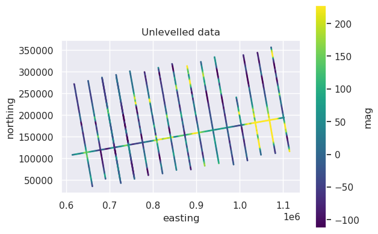

Cross-over levelling: trend vs wavelength based#
[1]:
%load_ext autoreload
%autoreload 2
import logging
import matplotlib.pyplot as plt
import numpy as np
import pandas as pd
import plotly.io as pio
import verde as vd
import airbornegeo
# setup logging to get some additional info from the airbornegeo functions
logging.getLogger("airbornegeo").setLevel("INFO")
logging.basicConfig()
pio.renderers.default = "notebook"
Load data#
This notebook uses the data and intersections dataframes from the previous notebook Cross-over-errors.
[2]:
data_df = pd.read_csv("data/AGAP_magnetic_survey_processed_blocked.csv")
data_df = data_df[
[
"easting",
"northing",
"height",
"line",
"unixtime",
"distance_along_line",
"mag",
]
]
# define flight lines vs tie lines
data_df["line_type"] = np.where(data_df.line >= 142, 1, 0)
data_df = data_df.rename(columns={"distance_along_line": "along_line_distance"})
# keep a subset of tie lines and just 1 flight line
line = 77
lines_to_keep = [
150,
151,
152,
153,
154,
155,
156,
157,
158,
159,
160,
161,
162,
164,
165,
166,
167,
]
lines_to_keep = np.append(lines_to_keep, line)
data_df = data_df[(data_df.line.isin(lines_to_keep))]
data_df.head()
[2]:
| easting | northing | height | line | unixtime | along_line_distance | mag | line_type | |
|---|---|---|---|---|---|---|---|---|
| 155245 | 613796.184341 | 108259.149034 | 3793.1 | 77 | 1.230970e+09 | 72.986528 | 35.54 | 0 |
| 155246 | 614014.105815 | 108288.966298 | 3791.7 | 77 | 1.230970e+09 | 292.943124 | 35.18 | 0 |
| 155247 | 614232.757811 | 108315.269624 | 3791.9 | 77 | 1.230970e+09 | 513.172378 | 34.43 | 0 |
| 155248 | 614414.514181 | 108337.253486 | 3793.5 | 77 | 1.230970e+09 | 696.255616 | 33.60 | 0 |
| 155249 | 614594.969358 | 108363.481597 | 3794.7 | 77 | 1.230970e+09 | 878.614978 | 32.61 | 0 |
[3]:
vmin, vmax = vd.minmax(data_df.mag, min_percentile=5, max_percentile=95)
ax = data_df[::10].plot.scatter(
"easting",
"northing",
c="mag",
s=1,
cmap="viridis",
vmin=vmin,
vmax=vmax,
title="Unlevelled data",
)
ax.set_aspect("equal")

[ ]:
# Create Survey object with data and column bindings
survey = airbornegeo.Survey(
data_df,
line_column="line",
line_type_column="line_type",
distance_column="along_line_distance",
)
# calculate theoretical intersection points
survey.create_intersection_table(method="groups")
# interpolate mag data at intersections
survey.interpolate_intersections(
to_interp="mag",
window_width=500,
method="cubic",
extrapolate=False,
)
# calculate cross-over errors
survey.calculate_crossover_errors(data_col="mag")
# Capture baseline inters for branching (forked intersection pattern)
inters = survey.intersections
[ ]:
survey.plot_line_and_crosses(
y=["mag"], x="along_line_distance", line=line, y_axes=[1], plot_inters=True
)
[ ]:
survey.intersections.plot.scatter(
"dist_along_line1",
"crossover_error_0",
marker="^",
s=30,
c="r",
# ax=axs,
label="mistie values",
)
Level with fitting a trend to the cross-overs#
By fitting a trend to the mistie values, we can create levelling correction values to add to the entire line. For this, we can choose the order of the trend. A trend order of 0 results in a vertical shift, a trend order of 1 results in tilting line, and a trend of order 2 gives a polynomial.
[ ]:
# Level with trend degree 0 - reset to baseline for independent branch
survey.intersections = inters
survey.crossover_pair_levelling(
lines_to_level=[line],
data_col="mag",
levelled_col="mag_levelled_trend0",
degree=0,
)
# calculate levelling correction
survey.data["levelling_correction_trend0"] = (
survey.data.mag - survey.data.mag_levelled_trend0
)
[ ]:
# Level with trend degree 1 - reset to baseline for independent branch
survey.intersections = inters
survey.crossover_pair_levelling(
lines_to_level=[line],
data_col="mag",
levelled_col="mag_levelled_trend1",
degree=1,
)
# calculate levelling correction
survey.data["levelling_correction_trend1"] = (
survey.data.mag - survey.data.mag_levelled_trend1
)
[ ]:
# Level with trend degree 2 - reset to baseline for independent branch
survey.intersections = inters
survey.crossover_pair_levelling(
lines_to_level=[line],
data_col="mag",
levelled_col="mag_levelled_trend2",
degree=2,
)
# calculate levelling correction
survey.data["levelling_correction_trend2"] = (
survey.data.mag - survey.data.mag_levelled_trend2
)
[ ]:
fig, axs = plt.subplots(1, 1, figsize=(10, 5))
ax = survey.intersections.plot.scatter(
"dist_along_line1",
"crossover_error_0",
marker="^",
s=30,
c="r",
ax=axs,
label="mistie values",
)
ax = survey.data[survey.data.line == line].plot.scatter(
"along_line_distance",
"levelling_correction_trend0",
s=0.2,
c="g",
ax=axs,
label="Levelling correction trend 0",
)
ax = survey.data[survey.data.line == line].plot.scatter(
"along_line_distance",
"levelling_correction_trend1",
s=0.2,
c="purple",
ax=axs,
label="Levelling correction trend 1",
)
ax = survey.data[survey.data.line == line].plot.scatter(
"along_line_distance",
"levelling_correction_trend2",
s=0.2,
c="b",
ax=axs,
label="Levelling correction trend 2",
)
ax.set_ylabel("nT")
ax.legend(markerscale=2)
plt.show()
Wavelength-based levelling#
In the above cells, we calculate cross-over errors, and fit trends of specified orders to these values, yielding a levelling correction.
An alternative method is to interpolate these cross-over errors along the entire line and low-pass filter the results. This means we can choose the wavelength of our levelling correction, and our levelling corrections are independent of line length.
[ ]:
# Wavelength-based levelling with 100km filter - reset to baseline for independent branch
survey.intersections = inters
survey.crossover_pair_levelling(
lines_to_level=[line],
data_col="mag",
levelled_col="mag_levelled_filter",
filter_type="g100000",
)
# calculate levelling correction
survey.data["levelling_correction_100km_filter"] = (
survey.data.mag - survey.data.mag_levelled_filter
)
[ ]:
# Wavelength-based levelling with 500km filter - reset to baseline for independent branch
survey.intersections = inters
survey.crossover_pair_levelling(
lines_to_level=[line],
data_col="mag",
levelled_col="mag_levelled_filter",
filter_type="g500000",
)
# calculate levelling correction
survey.data["levelling_correction_500km_filter"] = (
survey.data.mag - survey.data.mag_levelled_filter
)
[ ]:
# Wavelength-based levelling with 500km filter (repeated) - reset to baseline for independent branch
survey.intersections = inters
survey.crossover_pair_levelling(
lines_to_level=[line],
data_col="mag",
levelled_col="mag_levelled_filter",
filter_type="g500000",
)
# calculate levelling correction
survey.data["levelling_correction_500km_filter"] = (
survey.data.mag - survey.data.mag_levelled_filter
)
[ ]:
# Wavelength-based levelling with 1000km filter - reset to baseline for independent branch
survey.intersections = inters
survey.crossover_pair_levelling(
lines_to_level=[line],
data_col="mag",
levelled_col="mag_levelled_filter",
filter_type="g1000000",
)
# calculate levelling correction
survey.data["levelling_correction_1000km_filter"] = (
survey.data.mag - survey.data.mag_levelled_filter
)
[ ]:
fig, axs = plt.subplots(1, 1, figsize=(10, 5))
ax = survey.intersections.plot.scatter(
"dist_along_line1",
"crossover_error_0",
marker="^",
s=30,
c="r",
ax=axs,
label="mistie values",
)
ax = survey.data[survey.data.line == line].plot.scatter(
"along_line_distance",
"levelling_correction_100km_filter",
s=0.2,
c="g",
ax=axs,
label="Levelling correction 100 km filter",
)
ax = survey.data[survey.data.line == line].plot.scatter(
"along_line_distance",
"levelling_correction_500km_filter",
s=0.2,
c="purple",
ax=axs,
label="Levelling correction 500 km filter",
)
ax = survey.data[survey.data.line == line].plot.scatter(
"along_line_distance",
"levelling_correction_1000km_filter",
s=0.2,
c="b",
ax=axs,
label="Levelling correction 1000 km filter",
)
ax.set_ylabel("nT")
ax.legend(markerscale=2)
plt.show()
[ ]: